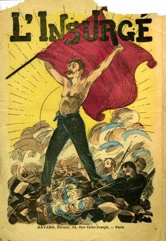

Mots insurgés
Je lance un cri lumineux sur le papier,
Un feu farouche écho de ma pensée.
Je cogne mes mots contre les murs,
Contre les chaînes, les censures dures.
J’appelle à haute voix ton absence,
Un chant d’amour né de la déchéance.
Je hurle dans ma nuit, sans détour,
À la recherche de mon contour.
Ma plume, fine lame de vérité,
Trace mes colères sans pitié.
Elle s’embrase, fière, sans peur,
Elle dit l’injustice, crache la douleur.
Ma plume tremble, fragile messagère,
Elle murmure des noms, des prières.
Elle devient oracle ou miroir,
Et dévoile ce qu’il faut voir.
L’encre saigne, le silence se fend,
Chaque mot naît d’un vide brûlant.
Des mots de feu qui traversent les silences,
Hurlent l'injustice, brisent l’apparence.
Tendres parfois, mais pleins de feu,
Ils battent ton nom dans chaque vœu.
Ces fragments d’un moi en errance,
Dévoilent le chaos, percent le silence.
À contre-courant du monde et de ses lois,
Mes mots montent, portées par la voix.
Ces éclats de vérité, tranchants, entiers,
Creusent des sillons de liberté.
À contre-courant du doute et du froid,
Ils cherchent encore la chaleur de ta voix.
Contre les rôles, les masques vides,
Ils sculptent un sol plus solide.
Ils dansent sur la crête des tempêtes,
Semant leurs rimes comme des comètes.
Le vent les prend, tranchantes et vraies,
Et les plante dans les cœurs blessés.
Le vent les porte, claires et légères,
Cherchant ton cœur dans la poussière.
Il les disperse, miettes de moi,
Des rimes semées là où tout se voit.
Aux quatre coins d’un monde en veille,
Pour secouer les âmes, réveiller le ciel.
Et chaque vers, dans l’ombre ou la lumière,
Devient l’arme douce d’une colère fière.
Et peut-être, au bord d’un souffle perdu,
Tu sentiras l’écho d’un “je t’ai reconnu”.
Chaque strophe, contre le néant dressé,
Fait surgir en moi une vie élargie, affirmée.
Djamel Metref
At Yenni le 25 mai 2025

← Tous les poèmes